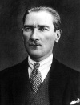

Mustafa Kemal Atatürk (1881–1938), Türkiye Cumhuriyeti’nin kurucusu ve ilk cumhurbaşkanıdır. Osmanlı İmparatorluğu’nun I. Dünya Savaşı’ndaki yenilgisinin ardından Türkiye’nin bağımsızlığını kazanmasında hayati bir rol oynamıştır. Ülkesini modern ve seküler bir devlet haline getirmiştir.

Atatürk, Osmanlı İmparatorluğu’ndaki Selanik şehrinde doğmuştu. İmparatorluk, Doğu Avrupa ve Orta Doğu’nun önemli bir bölümünü kontrol ediyordu. Ancak ekonomik ve askeri gücü düşüşe geçmişti. Çar 1. Nikola (1796-1855) Osmanlılar için Avrupa’nın “hasta adamı” benzetmesini yapmıştı.
1905 yılında Harp Akademisi’ni bitirip orduya katıldı. Suriye, Libya ve Balkanlar’da görev yaptı. Osmanlılar 1914 yılında
I. Dünya Savaşı’na katılıp Almanya ve Avusturya’nın safında yer aldılar. Atatürk 1915 yılında Çanakkale’de İngilizlere karşı büyük bir zafer kazanan birlikleri kumanda etti.
1918 yılındaki Müttefik zaferi Osmanlı İmparatorluğu’nun sonu oldu. Orta Doğu’daki toprakları İngiltere ve Fransa arasında paylaşıldı. Son halife görevinden alındı. Müttefikler aynı zamanda Türkiye’yi bölmeyi planlamıştı. Ancak burası Osmanlı İmparatorluğu’nun kalbiydi ve Atatürk bağımsızlık savaşı ile Türkiye’nin birliğini sağlamayı başardı.
1923 yılında Türkiye Cumhuriyeti kuruldu. Atatürk cumhuriyetin ilk cumhurbaşkanı oldu. Bir anayasa hazırlattı, okullar ve müzeler açtı. Türkiye’yi modernleştiren sosyal reformlar yaptı. Arap harflerinin yerine Latin alfabesini benimsedi. Osmanlı modernleşmesi ile özdeşleşen fes yerine batı tarzı şapkanın giyilmesini zorunlu kıldı. Soyadı kanununu çıkardı.
Atatürk dönemine sekülerleşme ve modernleşme damgasını vurdu. Bu prensipler, Kemalizm olarak bilinen ideolojinin de merkezinde yer alacaktı. Ölümünden yıllar sonra, askeri liderler seçilmişlere karşı yaptıkları darbeleri bu kurucu prensipleri korumak adına gerekli adımlar olarak savunacaklardı. Atatürk elli yedi yaşında sirozdan ölene dek görevde kaldı.
Ek Bilgiler
1- Türkiye’de Atatürk’e hakaret etmek suçtur. Prof. Atilla Yayla, tarih kitaplarında Atatürk’ün reformlarının abartılı bir biçimde ele alındığını söylediği için 2008 yılında on beş ay ertelenmiş hapis cezasına çarptırılmıştır.
2- Fesi yasaklayınca kendisi de halka örnek olmak için batı tarzı bir panama şapkası giymeye başladı.
3- Soyadını 1935 yılında aldı. “Atatürk” Türklerin atası anlamına gelmektedir.